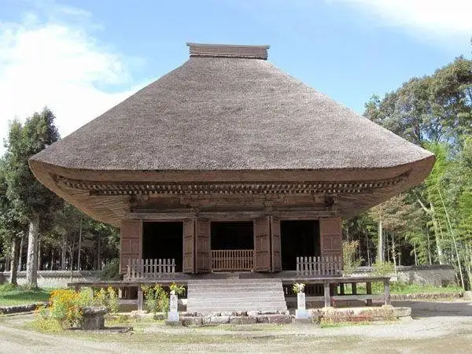
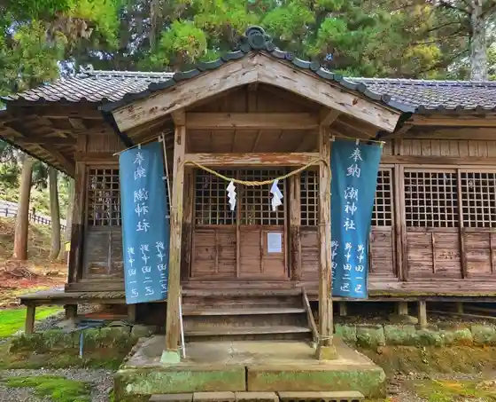
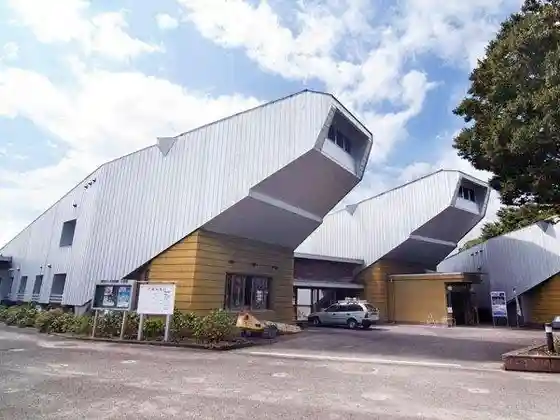
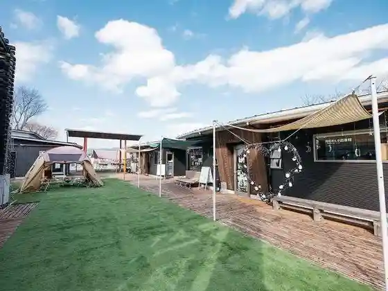

Japan / Kumamoto / Yunomae
Yunomae
Yunomae · Kumamoto
Yunomae
Highlighted on the Kumamoto map.

Sights
Fureai Koryu Center " Yu Topia "
Yunomae, Kumamoto · 0966-43-4143 · Official / source link
Shio Shrine (Ushiojinja) Sai Shrine
Yunomae, Kumamoto · 0966-43-4111 · Official / source link

Shiro Izumi Tera Amida Do
Yunomae, Kumamoto · 0966-43-2050 · Official / source link
Yunomae Manga Art Museum
Yunomae, Kumamoto · 0966-43-2050 · Official / source link

Yunomae Eki Reruingu
Yunomae, Kumamoto · 0966-43-4888 · Official / source link

Yu no Mae Onsen Yu Raku Sato
Yunomae, Kumamoto · 0966-43-4126 · Official / source link
Yunomae Manga Library
Yunomae, Kumamoto · 0966-43-4888 · Official / source link
Shimozato Ontai Shi Do
Yunomae, Kumamoto · Official / source link
Ontai Shi Do
Yunomae, Kumamoto · Official / source link
Ichifusa Sanshin Miyashita Miya (Satomiya Shrine)
Yunomae, Kumamoto · Official / source link
Hone Kajiri
Yunomae, Kumamoto · 0966-43-4126 · Official / source link
Shita Town Hashi
Yunomae, Kumamoto · Official / source link
Shiro Izumi Tera (Joshin Tera)
Yunomae, Kumamoto · Official / source link